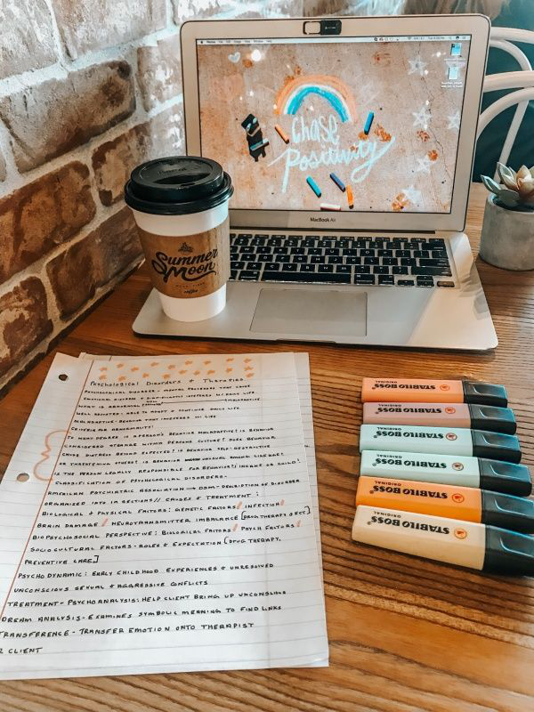

I'm just a cool and normal student, not come from a popular school.
But i quite active in sports such as Netball, Woodball and Taekwondo.
Below, I'd share about my previous school ;)
- Primary School
- When i was on standard one, I went to Sekolah Rendah Kebangsaan Sanglang, Perlis.
I study at this school until standard 6. I got 4A 1B on my UPSR exam !
- Secondary School
- The next is about secondary school. I study at Sekolah Menengah Kebangsaan Sanglang, Perlis.
I stay & study at the school from Form 1 until Form 5.
Secondary school moment was the best memories in my life because I got join many programs and sport activies with my other friends.
My SPM result not so Boom but yeah I very Thankful because I can get the offer to continue studying to UiTM Kedah :)
- Oh My University life !
- I went to UiTM on 2018 for semester 1. I got many coolest friends to be my teammate and bestfriend in that campus.
They always giving help when I'm in trouble. I really enjoy my university life because i can learn many new things and experience.
<
>